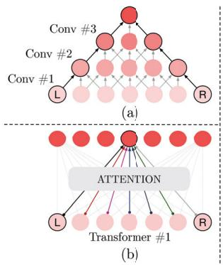
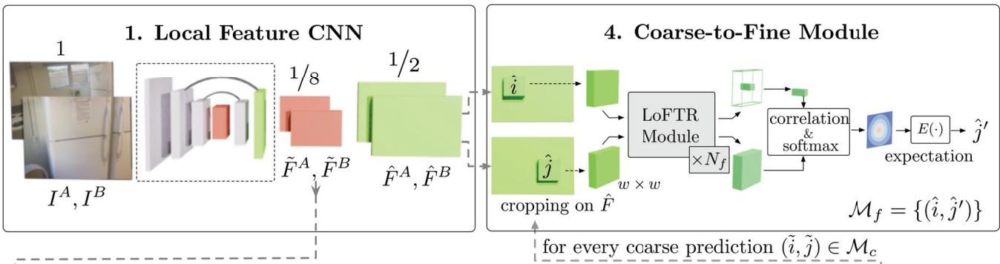
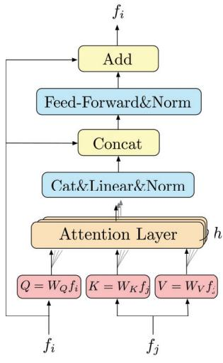

阶段 G · 学习式方法 / Lesson 0130
LoFTR 2021 · 不用检测器的稠密匹配
连「找点」这一步都不要了——直接在全图上铺满稠密对应，专治纹理缺失的墙和地板 🧱
🎯 主题：Detector-Free 的 Transformer 匹配
👥 作者：浙江大学 / 商汤等（Sun 等）
📅 2021 · LoFTR: Detector-Free Local Feature Matching with Transformers
本节目标
读完你应该能：① 说清 LoFTR 为什么能「不用检测器」；② 用生活类比解释「全局感受野」和「粗到精」；③ 讲出 dual-softmax 与 SuperGlue 的 Sinkhorn/dustbin 各自取舍；④ 知道它在纹理缺失处为什么碾压基于检测器的方法。
和前面课程怎么接
它是 0129 SuperGlue 的直接对手与升级 ：SuperGlue 仍依赖前端（SuperPoint）先「找点」，LoFTR 把「找点」也省了。两者都属于第一季 0011 那句「先吃掉匹配」 的同一战场（中间端）。它也是在回应第一季 0004 的手工特征匹配 ——只不过这次连「特征检测」这第一步都不要了。
1. 它比 SuperGlue 狠在哪：先讲人话
SuperGlue 虽好，但它有个隐藏前提：得先有人把「点」找出来 。传统方法（SIFT/ORB）和 SuperPoint 这类学习式前端，第一步都是「检测」——在图像里挑出角点、斑点这些「值得匹配的点」。问题来了：一面白墙 、一块纯色地板 、一片重复纹理 的窗帘，检测器根本挑不出可靠的点。这时候 SuperGlue 再聪明也没米下锅。
LoFTR 的思路很极端：干脆不找点了 。它把图像切成 1/8 分辨率的「像素格子」，直接在每个格子上建立匹配，再精修到亚像素。于是哪怕墙上一颗角点都没有，它也能在整面墙上铺满对应关系。
纹理缺失的墙：检测器找不到点，LoFTR 却能铺满对应
图 A · 检测器方法
几乎找不到可靠角点
0 个 → 配不上
图 B · LoFTR
每个 1/8 格子都有匹配
去掉「检测」一步
白墙、地板、重复纹理：正是检测器式方法最怕的场景，却是 LoFTR 的主场
这张图在画什么： 左边一面纹理缺失的墙，基于检测器的方法（如 SuperPoint+SuperGlue）几乎挑不出可靠角点，于是「没米下锅」；右边 LoFTR 不挑点，直接在整张图（1/8 分辨率）上铺满绿点，每个格子都建立对应。怎么看这张图： ① 注意左边只有零星两个灰点，说明检测器在白墙上「失业」了。② 右边的绿点是用 pattern 平铺表示的稠密匹配场——实际 LoFTR 输出的是一张「每个粗格子对应到另一图哪个粗格子」的图。要记住的一句话： LoFTR 的核心赌注是——「找点」本身才是匹配在难纹理处的瓶颈，把它去掉反而更稳 。
2. 全局感受野：为什么 Transformer 适合干这件事
不用检测器之后，每个格子要跟另一张图的所有格子比。这就要求一个格子能「看到」全图信息——这叫全局感受野 。卷积神经网络靠「一层只看邻居」，要连上相距很远的两个点得叠很多层；Transformer 的注意力一层就能直接连上任意两点。
卷积要叠很多层，Transformer 一层就连通
卷积（局部连接）
↑ 要叠很多层，L 和 R 才连得上
L
R
Transformer（全局）
L
R
↑ 一层注意力直接连上 L 与 R
不受距离限制
这张图在画什么： 左边是卷积：因为每层只看局部邻居，要把相距很远的两个点（L、R）的信息连起来，必须一层层往上堆；右边是 Transformer 的注意力：一层就能让 L 直接「看」到 R，画一条绿线。怎么看这张图： ① 左边的虚线折线代表信息要「绕很多层」才传过去，又慢又容易在中间丢失。② 右边的直线说明注意力是全局 的——这正是 LoFTR 能在「低纹理区」（没有局部线索可借）建立匹配的关键：它靠全局上下文直接判断。要记住的一句话： LoFTR 敢「不用检测器」，底气来自 Transformer 的全局感受野 ——即使一个点周围什么都没有，它也能从全图找到对应关系。

原图注（Fig. 4）： Illustration of the receptive field of (a) Convolutions and (b) Transformers. Assume that the objective is to establish a connection between the L and R elements to extract their joint feature representation. Due to the local connectivity of convolutions, many convolution layers need to be stacked together in order to achieve this connection. The global receptive field of Transformers enables direct modeling.怎么看这张图： 原文用 L、R 两个元素之间的连接来对比——卷积要叠很多层，Transformer 一层直达。这和上面那张自绘图是同一个意思，原文给的是更形象的「局部 vs 全局」示意图。
3. 整体架构与 Linear Transformer
LoFTR 把「检测→描述→匹配」三步并成两步：先抽特征，再用 Transformer 模块把两图的粗特征「搅」到一起，最后做粗匹配 + 精修。

原图注（Fig. 2）： Overview of the proposed method. LoFTR has four components: 1. A local feature CNN extracts the coarse-level feature maps $\tilde F^A$ and $\tilde F^B$, together with the fine-level feature maps $\hat F^A$ and $\hat F^B$ from the image pair. 2. The coarse feature maps are flattened to 1-D and processed by the LoFTR module (alternating self- and cross-attention) ...怎么看这张图： 顺着四步走——CNN 抽出粗（1/8）和细（1/2）两套特征；LoFTR 模块在粗特征上做 self/cross attention；粗匹配层挑出匹配对；最后 coarse-to-fine 在细特征上把它们精修到亚像素。
3.1 关键工程：把注意力从 O(N²) 降到 O(N)
注意力虽好，但标准点积注意力对 N 个点要做 N×N 次，是二次复杂度。LoFTR 用了 Linear Transformer ：把指数核换成 $\phi(Q)\phi(K)^\top$（其中 $\phi=\text{elu}+1$），借助矩阵结合律，把复杂度从 $O(N^2)$ 降到 $O(N)$。这是它能在 640×480 上实时跑通的前提。

原图注（Fig. 3）： Encoder layer and attention layer in LoFTR. (a) Transformer encoder layer. (b) Vanilla dot-product attention with $O(N^2)$ complexity. (c) Linear attention layer with O(N) complexity. The scale factor is omitted for simplicity.怎么看这张图： (b) 是朴素注意力，复杂度随点数平方增长；(c) 是 LoFTR 用的 Linear attention，利用 $\phi(Q)\phi(K)^\top$ 的核技巧把复杂度压到线性。这一步是 LoFTR 能处理稠密（点数极多）又不太慢的关键。
这句话在说什么： 把注意力里那个「每个点和其他所有点都算一次」的矩阵，换成一个能先合并、再乘回来的形式（核技巧），于是计算量从「点数平方」变成「点数线性」。点越多（LoFTR 是稠密的，点极多），这个加速越关键。
4. 粗匹配 + 精修：coarse-to-fine
LoFTR 不在全分辨率上硬算（那太贵），而是「先粗后精」：先在 1/8 的粗格子层建立匹配，再对每个粗匹配，到 1/2 的细特征图里裁一个 5×5 的小窗，精修出亚像素位置。
coarse-to-fine：先在大格子粗配，再在小窗里精修
① 粗层（1/8 分辨率）
一个粗匹配
② 细层（1/2）局部 5×5 窗
亚像素精修点（黄）落在格子之间
放大到 5×5 窗
粗匹配给出「哪两个大格子对应」，精修给出「格子内部精确到小数点的位置」
这张图在画什么： 左边是 1/8 分辨率的粗网格，LoFTR 先在上面找「哪两个大格子对应」（蓝点）；右边是把那个粗匹配放大，到 1/2 分辨率的细网格里裁一个 5×5 的小窗，用一个小 Transformer 算出亚像素精修位置（黄点落在格子之间）。怎么看这张图： ① 粗层只解决「大致对应」，因此点数少、便宜。② 精修只在每个粗匹配的局部小窗里做，所以整体仍然便宜。③ 黄点在细格子「之间」，代表亚像素精度——比粗格子本身更准。要记住的一句话： coarse-to-fine 是 LoFTR「既稠密又不太慢」的核心——全局在粗层做，精度在细层补 。
5. 粗匹配层：dual-softmax 与实验
粗匹配层要给每个粗格子对打一个分数 $S(i,j)$，然后挑出匹配。LoFTR 提供了两种可微匹配层：一种和 SuperGlue 一样用最优传输，另一种是他们主推的 dual-softmax（双向 softmax 相乘） ——它用「行 softmax × 列 softmax」近似一个可微的互近邻（MNN），从而完全避开了 SuperGlue 的 Sinkhorn 迭代和 dustbin 。
dual-softmax：行 softmax × 列 softmax ≈ 可微的「互相最近」
① 分数 S
0.9 0.1
0.2 0.8
原始相似度
② 行 / 列 softmax
0.88 0.12
0.05 0.95
行归一（每行和=1）
③ 两者相乘 → P
0.95 0.02
0.01 0.97
接近对角 = 一一对应
对比 SuperGlue：不需要 dustbin、不需要 Sinkhorn 迭代
双向 softmax 相乘，天然偏好像「互相都是最近邻」的配对
再经阈值 0.2 + 互近邻（MNN）筛选，得到最终粗匹配 M_c
这张图在画什么： ① 原始相似度矩阵 $S$；② 对它的每一行、每一列分别做 softmax（图中以行归一示意）；③ 把「行 softmax」和「列 softmax」对应位置相乘，得到最终匹配概率 $P$。$P$ 接近对角，就是一一对应。怎么看这张图： ① 行 softmax 让「该行最像的」得高分，列 softmax 让「该列最像的」得高分，两者都高的格子 才是「互相都是最近邻」的可靠配对。② 这套操作和 SuperGlue 形成对照：没有 dustbin（不需要显式处理遮挡的兜底列），也没有 Sinkhorn 的百次迭代 ，更快更直接。要记住的一句话： dual-softmax 用「双向 softmax 相乘」这种便宜又完全可微的办法，近似了 SuperGlue 用最优传输才做到的事——这是 LoFTR「该快的地方才快」的前奏 （下一节 LightGlue 把这条线推到极致）。
这句话在说什么： 最终的匹配概率 = 「第 i 行里 j 排第几像」乘上「第 j 列里 i 排第几像」。两个方向都靠前，才算互近邻——这就是可微版本的「互相最近邻（MNN）」。
5.1 几个关键数字（来自正文 Table 1–3）
测试
LoFTR-DS AUC
SP + SuperGlue
HPatches homography @10° 84.6 81.7 室内 ScanNet AUC@20° 57.62 51.84 室外 MegaDepth AUC@20° 81.18 75.96 速度（640×480, 2080Ti） dual-softmax 116ms SuperGlue ~70ms（但 LoFTR 稠密得多）
一个反直觉的观察： 在室内，LoFTR-OT（用最优传输）略好于 LoFTR-DS（用 dual-softmax）；但在室外 MegaDepth 上，dual-softmax 反而更好 。作者没有给出完美解释，只说这是数据分布的差异。另外 LoFTR-OT 在 MegaDepth 上只跑 3 次 Sinkhorn 迭代——和 SuperGlue 的 100 次形成鲜明对比，侧面说明 LoFTR 的粗匹配已经相当准，不需要反复迭代。
互动判断
关于 LoFTR 的「不用检测器」，下面哪种说法最准确？
它靠稠密特征+全局注意力，在检测器失效处仍能匹配
它只是把检测器换成了更准的另一种检测器
5.2 收束到本季暗线
LoFTR 在这一季的「复杂 vs 极简」暗线上站在往上加复杂度 那一侧（Transformer + 全局注意力 + coarse-to-fine 是一套相当重的机制），但它也用 dual-softmax 和 Linear Transformer 把「贵」的那部分压下去了。下一节 LightGlue 会沿着「更聪明地省」继续走，而再后面的 SiLK 则直接否定「需要上下文聚合」这个前提。
课后练习
为什么在「白墙」这类纹理缺失场景下，SuperPoint+SuperGlue 会失灵，而 LoFTR 不会？
展开查看答案
SuperPoint 是检测器，先挑「显著点」；白墙上挑不出可靠角点，于是 SuperGlue「没米下锅」。LoFTR 不做检测，直接在 1/8 分辨率的稠密特征格子上建立匹配，靠 Transformer 的全局感受野判断对应关系，因此墙上有没有角点都不影响它铺满对应。
dual-softmax 相比 SuperGlue 的 Sinkhorn + dustbin，省掉了什么？代价可能是什么？
展开查看答案
dual-softmax 用「行 softmax × 列 softmax」一步得到匹配概率，没有 dustbin 兜底列，也没有百次 Sinkhorn 迭代 ，更快、实现更简单。代价是：它不像 dustbin 那样显式建模「这个点不可匹配 / 被遮挡」，对极端遮挡的处理不如 SuperGlue 优雅——这也是为什么在室内 LoFTR-OT 仍略优于 LoFTR-DS 的原因。
Linear Transformer 解决了 LoFTR 的什么瓶颈？如果退回标准注意力会怎样？
展开查看答案
LoFTR 是稠密匹配，粗格子点数极多；标准注意力的 $O(N^2)$ 会让计算爆炸。Linear Transformer 用核技巧 $\phi(Q)\phi(K)^\top$（$\phi=\text{elu}+1$）借助矩阵结合律把复杂度降到 $O(N)$，使它在 640×480 上仍能 116ms 跑通。退回标准注意力，点数一多就太慢，实时性无从谈起。
coarse-to-fine 是怎么兼顾「稠密」和「不太慢」的？
展开查看答案
全局匹配只在便宜的 1/8 粗层做（点数少）；确定粗匹配后，只在每个匹配的局部 5×5 细窗里做昂贵的精修。这样「全局对应」和「亚像素精度」分在两步，整体复杂度远低于「全分辨率全局匹配」，从而既稠密又不太慢。